Artificial Neural Networks#
Michael J. Pyrcz, Professor, The University of Texas at Austin
Twitter | GitHub | Website | GoogleScholar | Geostatistics Book | YouTube | Applied Geostats in Python e-book | Applied Machine Learning in Python e-book | LinkedIn
Chapter of e-book “Applied Machine Learning in Python: a Hands-on Guide with Code”.
Cite this e-Book as:
Pyrcz, M.J., 2024, Applied Machine Learning in Python: A Hands-on Guide with Code [e-book]. Zenodo. doi:10.5281/zenodo.15169138 
The workflows in this book and more are available here:
Cite the MachineLearningDemos GitHub Repository as:
Pyrcz, M.J., 2024, MachineLearningDemos: Python Machine Learning Demonstration Workflows Repository (0.0.3) [Software]. Zenodo. DOI: 10.5281/zenodo.13835312. GitHub repository: GeostatsGuy/MachineLearningDemos 
By Michael J. Pyrcz
© Copyright 2024.
This chapter is a tutorial for / demonstration of Artificial Neural Networks.
YouTube Lecture: check out my lectures on:
These lectures are all part of my Machine Learning Course on YouTube with linked well-documented Python workflows and interactive dashboards. My goal is to share accessible, actionable, and repeatable educational content. If you want to know about my motivation, check out Michael’s Story.
Motivation#
Artificial neural networks are very powerful, nature inspired computing based on an analogy of brain
I suggest that they are like a reptilian brain, without planning and higher order reasoning
In addition, artificial neural networks are a building block of many other deep learning methods, for example,
convolutional neural networks
recurrent neural networks
generative adversarial networks
autoencoders
Nature inspired computing is looking to nature for inspiration to develop novel problem-solving methods,
artificial neural networks are inspired by biological neural networks
nodes - in our model are artificial neurons, simple processors
connections between nodes are artificial synapses
intelligence emerges from many connected simple processors. For the remainder of this chapter, I will used the terms nodes and connections to describe our artificial neural network.
Neural Network Concepts#
Here are some key aspects of artificial neural networks,
Basic Design - “…a computing system made up of a number of simple, highly interconnected processing elements, which process information by their dynamic state response to external inputs.” Caudill (1989).
Still a Prediction Model - while these models may be quite complicated with even millions of trainable model parameters, weights and biases, they are still a function that maps from predictor features to response features,
Supervised learning – we provide training data with predictor features, \(X_1,\ldots,𝑋_𝑚\) and response feature(s), \(𝑌_1,\ldots,𝑌_K\), with the expectation of some model prediction error, \(\epsilon\).
Nonlinearity - nonlinearity is imparted to the system through the application of nonlinear activation functions to model nonlinear relationships
Universal Function Approximator (Universal Approximation Theorem) - ANNs have the ability to learn any possible function shape of \(f\) over an interval, for an arbitrary wide (single hidden layer) by Cybenko (1989) and arbitrary depth by Lu and others (2017)
A Simple Network#
To get started, let’s build a neural net, single hidden layer, fully connected, feed-forward neural network,
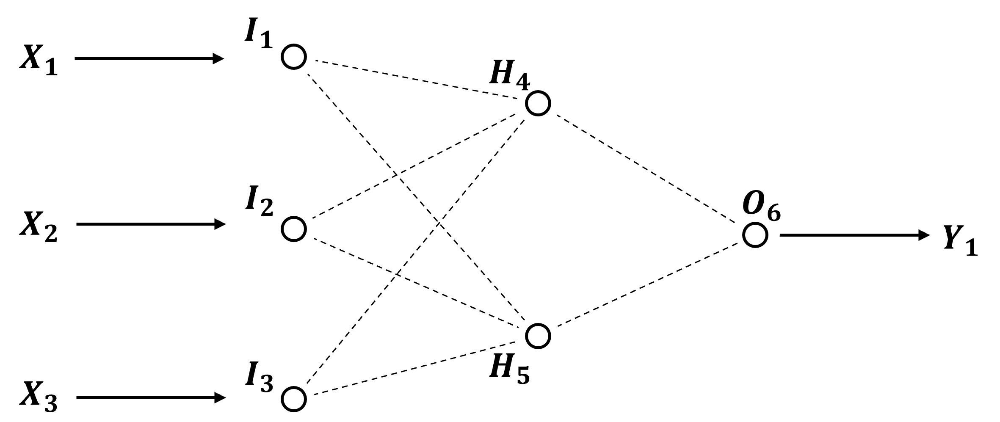
We use this example artificial neural network in the descriptions below and as an actual example that we will train and predict with by-hand!
Now let’s label the parts of our network,
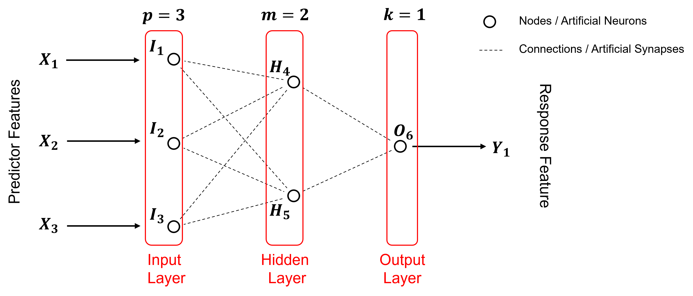
Our artificial neural network has,
3 predictor features, \(X_1\), \(X_2\) and \(X_3\)
3 input nodes, \(I_1\), \(I_2\) and \(I_3\)
2 hidden layer nodes, \(H_4\) and \(H_5\)
1 output node, \(O_6\)
1 response feature, \(Y_1\)
where all nodes fully connected. Note, deep learning is a neural network with more than 1 hidden layer, but for brevity let’s continue with our non-deep learning artificial neural network.
Description of the Network Approach#
Let’s talk about the network, the parts and how information flows through the network.
Feed-forward – all information flows from left to right. Each node sends the same signal along the connections to all the nodes in the next layer,
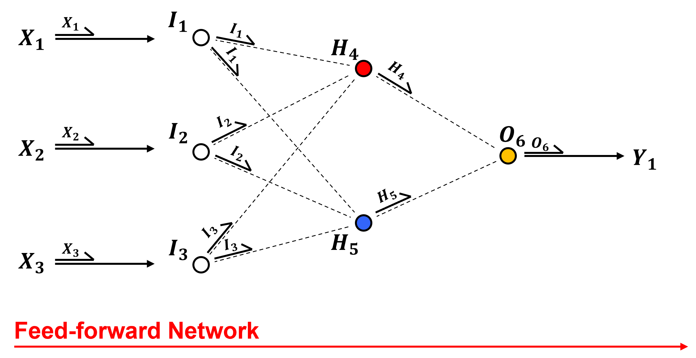
Input Layer - the input features are passed directly to the input nodes, in the case of continuous predictor features, there is one input node per feature and the features are,
min / max normalization to a range \(\left[ −1,1 \right]\) or \(\left[ 0,1 \right]\) to improve activation function sensitivity and to remove the influence of scale differences in predictor features and to improve solution stability, i.e., smooth reduction in the training loss while training
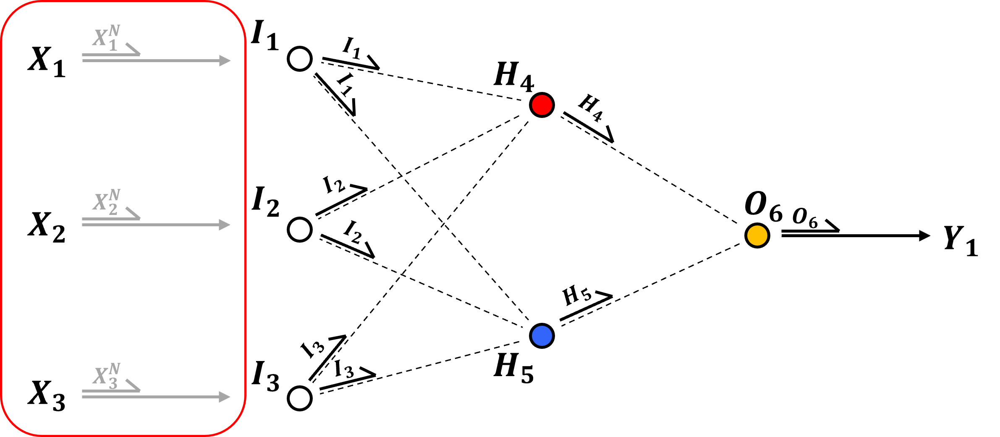
In the case of categorical predictor features, we have one input node per each category for each predictor feature, i.e., after one-hot-encoding of the feature where each encoding is passed to a separate input node.
recall one-hot-encoding, 1 if the specific category, 0 otherwise, replaces the categorical feature with a binary vector with length as the number of categories.
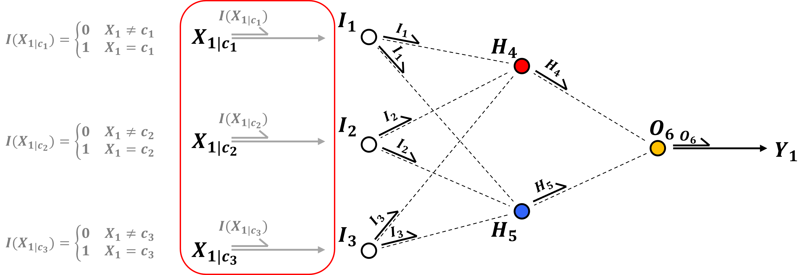
we could also use a single input node per categorical predictor and assign thresholds to each categories, for example \(\left[ 0.0, 0.5, 1.0 \right]\) for 3 categories, but this assumes an ordinal categorical feature
Hidden Layer - the input layer values \(I_1, I_2, I_2\) are weighted with learnable weights,
in the hidden layer nodes, the weighted input layer values, \(\lambda_{1,4} \cdot I_1, \lambda_{2,4} \cdot I_2 \cdot I_2, \ldots, \lambda_{3,5} \cdot I_3\) are summed with the addition of a trainable bias term in each node, \(b_4\) and \(b_5\).
the nonlinear activation is applied,
the output from the input layer nodes to all hidden layer nodes is contant (again, each node sends the same value to all nodes in the next layer)
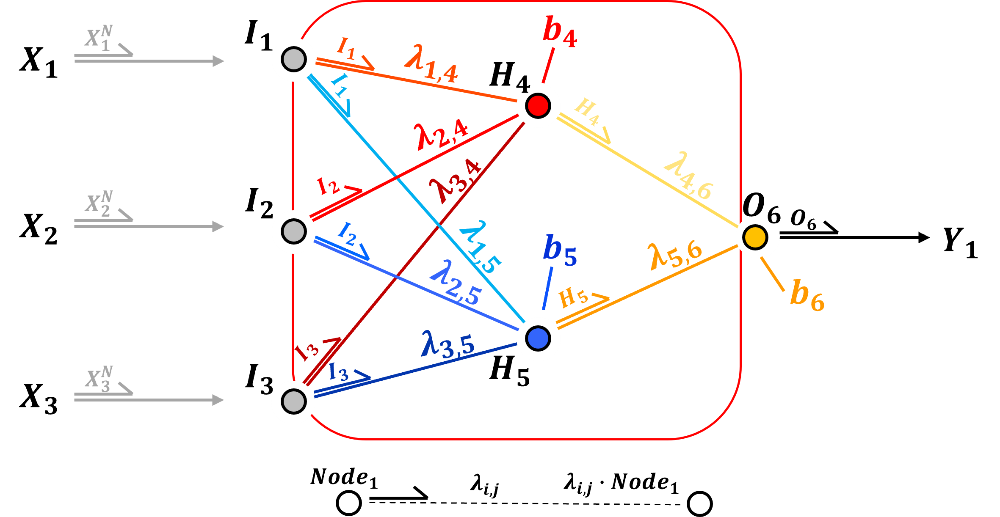
Output Layer - for continuous response features there is one output node per normalized response feature. Once again the weighted linear combination of inputs plus a node bias are calculated,
and then activation is applied, but for a continuous response feature, typically identity (linear) transform is applied,
backtransformation from normalized to original response feature(s) are then applied to recover the ultimate prediction
as with continuous predictor features, min / max normalization is applied to continuous response features to a range [−1,1] or [0,1] to improve activation function sensitivity
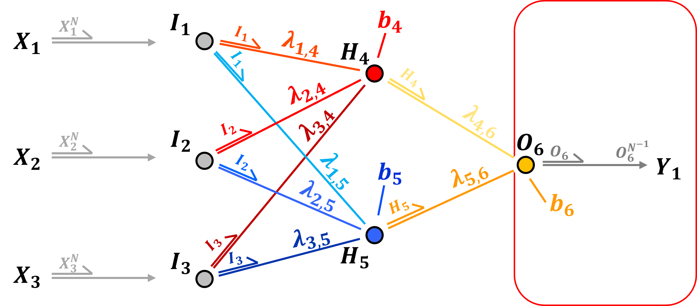
In the case of a categorical response feature, once again one-hot-encoding is applied, therefore, there is one output node per category.
the prediction is the probability of each category
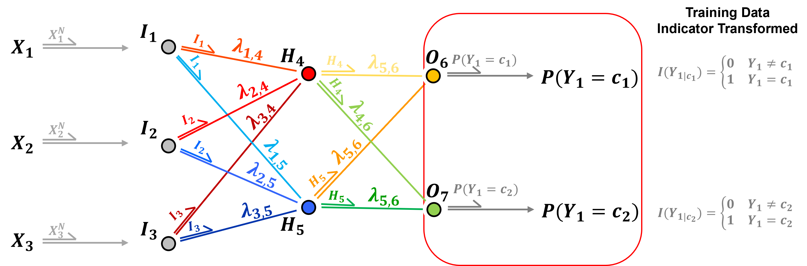
Walkthrough the Network#
Now we are ready to walkthough the artificial neural network.
we follow a single path to illustrate the precise calculations associated with making a prediction with an artificial neural network
The full forward pass is explained next.
Inside an Input Layer Node - input layer nodes just pass the predictor features,
normalized continuous predictor feature value
a single one-hot-encoding value [0 or 1] for categorical prediction features
into the hidden layer nodes, with general vector notation,
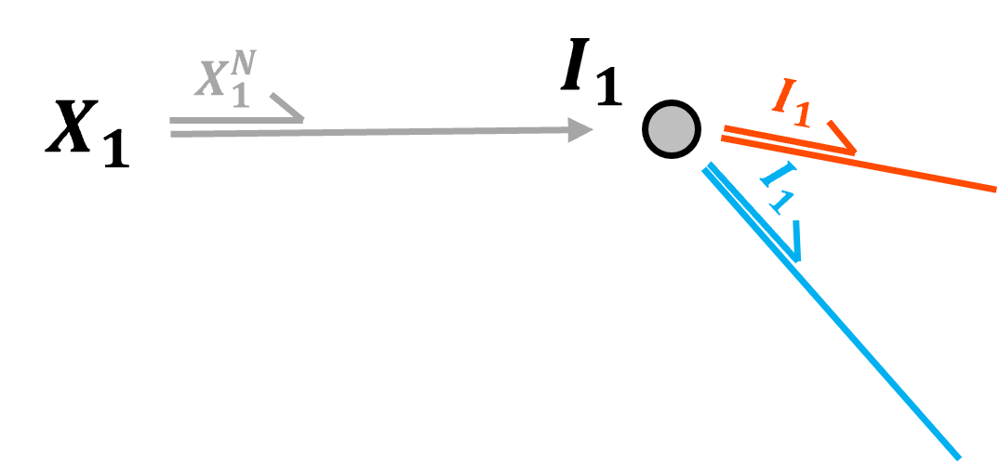
We can generalize over all input layer nodes with,
Inside an Hidden Layer Node
The hidden layer nodes are simple processors. The take linearly weighted combinations of inputs, add a node bias term and then nonlinearly transform the result, this transform is call the activation function, \(\alpha\).
indeed, a very simple processor!
through many interconnected nodes we gain a very flexible predictor, emergent ability to characterize complicated, nonlinear patterns.
Prior to activation we have,
and after activation we have,
We can express the simple processor in the node with general vector notation as,
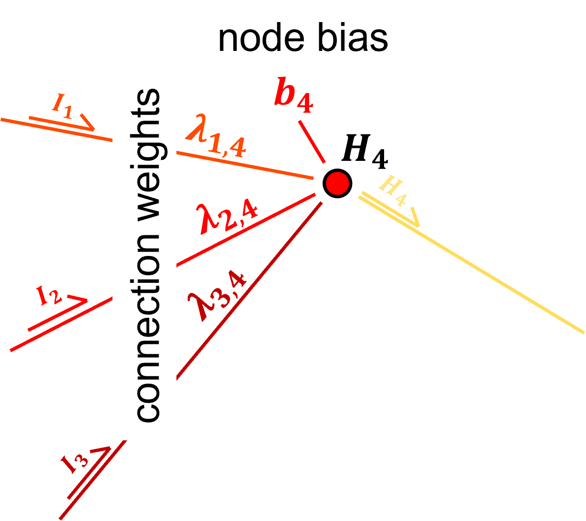
We can generalize over all hidden layer nodes with,
and after activation, the node output is,
Inside an Output Layer Node
The output layer nodes take linearly weighted combinations of nodes’ inputs, adds a node bias term and then transforms the result with an activation function, \(\alpha\), same as the hidden layer nodes,
Prior to activation we have,
and after activation, assuming identity activation we have,
We can express the simple processor in the node with general vector notation as,
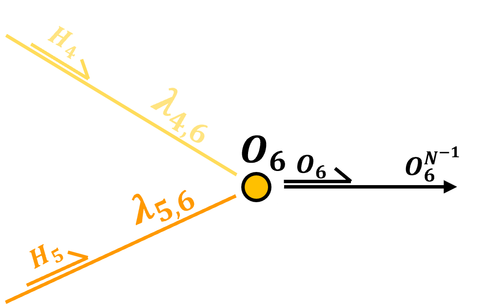
and for categorical response features, softmax activation is commonly applied,
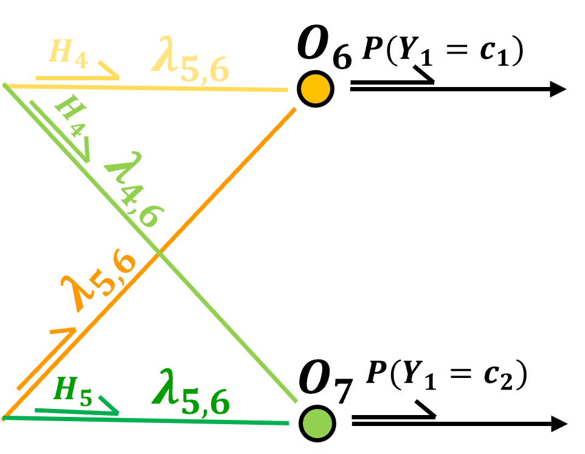
softmax activation ensures that the output over all the output layer nodes are valid probabilities including,
nonnegativity - through the exponentiation
closure - probabilities sum to 1.0 through the denominator normalizing the result
Note, for all future discussions and demonstrations, I assume a standardized continuous responce feature.
Network Forward Pass#
Now that we have completed a walk-through of our network on a single path, let’s combine all the paths through our network to demonstrate a complete forward pass through our artificial neural network.
this is the calculation required to make a prediction with out,
where the activation functions \(\sigma_{H_4}\) = \(\sigma_{H_5}\) = \(\sigma\) are sigmoid, and \(\sigma_{O_6}\) is linear (identity), so we could simplify the forward pass to,
This emphasizes that our neural network is a nested set of activated linear systems, i.e., linearly weighted averages plus bias terms applied to activation functions.
Number of Model Parameters#
In general, there are many model parameters, \(theta\), in an artificial neural network. First, let’s clarify these definitions to describe our artificial neural network,
neural network width - the number of nodes in the layers of the neural network
neural network depth - the number of layers in the neural network, typically the input layer is not included in this calculation
Now, let’s assume the following compact notation for a 3 layer artificial neural network, input, output and 1 hidden layer, with the width of each layer as,
number of input nodes, \(p\)
number of hidden layer nodes, \(m\)
and number of output nodes, \(k\)
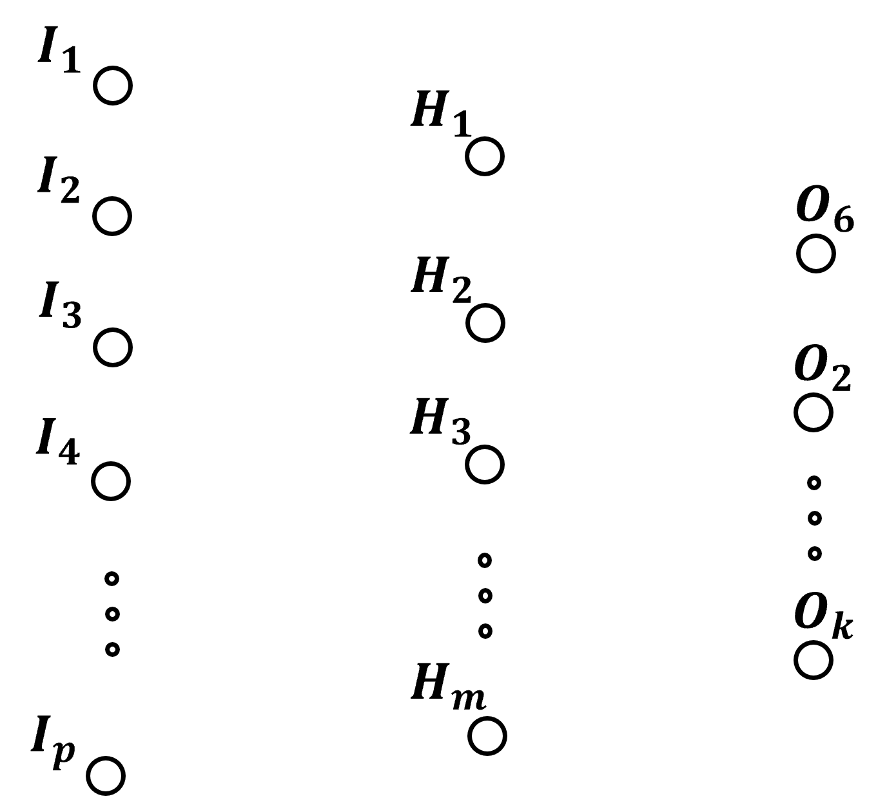
fully connected, so for every connection there is a weight,
with full connectivity the number of weights is
and at each hidden layer node there is a bias term,
and at every output node there is a bias term,
Therefore, the number of model parameters is,
this assumes an unique bias term at each hidden layer node and output layer node, but in some case the same bias term may be applied over the entire layer.
For our example, with \(p = 3\), \(m = 2\) and \(k = 1\), then the number of model parameters are,
after substitution we have,
I select this as a manageable number of parameters, so we can train and visualize our model, but consider a more typical model size by increasing our artificial neural network’s width, with \(p = 10\), \(m = 20\) and \(k = 3\), then we have many more model parameters,
If we add hidden layers, increase our artificial neural network’s depth, the number of model parameters will grow very quickly.
we can generalize this calculation for any fully connected, feed forward neural network, given a \(W\) vector with the number of nodes, i.e., the width of each layer,
where,
\(l_0\) is the number of input neurons
\(l_1, \dots, l_{n-1}\) are the widths of the hidden layers
\(l_n\) is the number of output neurons
The total number of connection weights is,
the total number of node biases (there are not bias parameters in the input layer nodes, \(l_0\)) is,
the total number of trainable model parameters, connectioned weights and node biases, is,
Let’s take an example of artificial neural network with 4 hidden layers, with network width by-layer vector of,
The total number of connection weights is,
and the total number of node biases is,
and finally the total nuber of trainable parameters is,
Activation Functions#
The activation function is a transformation of the linear combination of the weighted node inputs plus the node bias term. Nonlinear activation,
introduces non-linear properties, and complexity to the network
prevents the network from collapsing
Without the nonlinear activation function we would have linear regression, the entire system collapses.
For more information about activation functions and a demonstration of the collapse without nonlinear activation to multilinear regression see the associated chapter in this e-book, Neural Network Activation Functions.
Training Networks Steps#
Training an artificial neural network proceeds iteratively by these steps,
initialized the model parameters
forward pass to make a prediction
calculate the error derivative based on the prediction and truth over training data
backpropagate the error derivative back through the artificial neural network to calculate the derivatives of the error over all the model weights and biases parameters
update the model parameters based on the derivatives and learning rates
repeat until convergence.
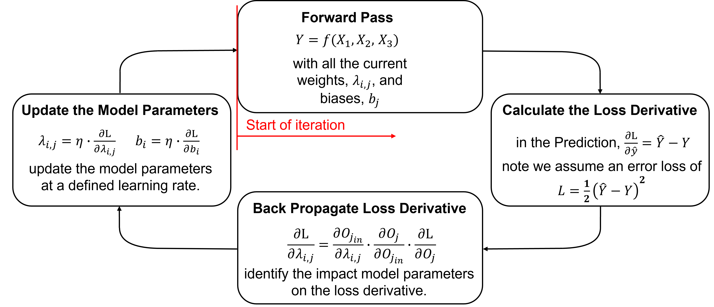
Here’s some details on each step,
Initializing the Model Parameters - initialize all model parameters with typically small (near zero) random values. Here’s a couple common methods,
Xavier Weight Initialization - random realizations from uniform distributions specified by \(U[\text{min}, \text{max}]\),
where \(F^{-1}_U\) is the inverse of the CDF, \(p\) is the number of inputs, and \(p^{\ell}\) is a random cumulative probability value drawn from the uniform distribution, \(U[0,1]\).
Normalized Xavier Weight Initialization - random realizations from uniform distributions specified by \(U[\text{min}, \text{max}]\),
where \(F^{-1}_U\) is the inverse of the CDF, \(p\) is the number of inputs, \(k\) is the number of outputs, and \(p^{\ell}\) is a random cumulative probability value drawn from the uniform distribution, \(U[0,1]\).
For example, if we return to our first hidden layer node,
we have \(p = 3\) and \(k = 1\), and we draw from the uniform distribution,
Forward Pass - to make a prediction, \(\hat{y}\). Initial predictions will be random for the first iteration, but will improve over iterations. Once again for our model the forward pass is,
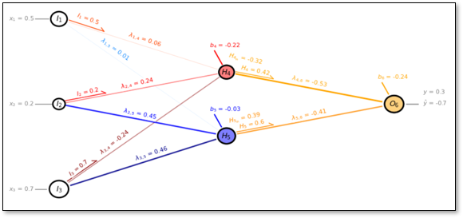
Calculate the Error Derivative - given a loss of,
and the error derivative, i.e., rate of change of in error given a change in model estimate is,
For now, let’s only consider a single estimate, and we will address more than 1 training data later.
Backpropagate the Error Derivative - we shift back through the artificial neural network to calculate the derivatives of the error over all the model weights and biases parameters, with the chain rule, for example the loss derivative backpropagated to the output of node \(H_4\),
Update the Model Parameters - based on the derivatives, \(\frac{\partial L}{\partial \lambda_{i,j}}\) and learning rates, \(\eta\), like this,
Repeat Until Convergence - return to step 1, until the error, \(L\), is reduced to an acceptable level, i.e., model convergence is the condition to stop the iterations
These are the steps, now let’s dive into the details for each, but first let’s start with the mathematical framework for backpropagation - the chain rule.
The Chain Rule#
Upon reflection, it is clear that the forward pass through our artificial neural network involves a sequence of nested operations that progressively transform the input signals as they propagate from the input nodes, through each layer, to the output nodes.
So we can represent this as a sequence of nested operations,
and now in this form to emphasize the nesting of operations,
By applying the chain rule to the nested functions \(y = h \bigl( g(f(x)) \bigr)\), we can solve for \(\frac{\partial y}{\partial x}\) as,
where we chain together the partial derivatives for all the operators to solve derivative of the output, \(y\), given the input, \(x\).
we can compute derivatives at any intermediate point in the nested functions, for example, stepping backwards one step,
and now two steps,
and all the way with three steps,
This is what we do with backpropagation, but this may be too abstract! Let’s move to a very simple feed forward neural network with only these three nodes,
\(I_1\) - input node
\(H_2 = h(I_1)\) - hidden layer node, a function of \(I_1\)
\(O_3 = o(H_2)\) - output node, a function of \(H_2\)
this is still intentionally abstract, i.e., without mention of weights and biases, to help you develop a mental framework of backpropagation with neural netowrks by the chain rule, we will dive into the details immediately after this discussion.
The output \(O_3\) depends on the input \(I_1\) through these nested functions:
Using the chain rule, the gradient of the output with respect to backpropagating one step,
and with respect to backpropagating two steps,
This shows how the gradient backpropagates through the network,
\(\frac{\partial O_3}{\partial I_1}\) - is the local gradient at the hidden node
\(\frac{\partial O_3}{\partial H_2}\) - is the local gradient at the output node
By backpropagation we can calculate the deriviates with respect to all parts of the network, how the input node signal \(I_1\), or hidden nodel signal \(H_2\) affect the output \(O_3\), \(\frac{\partial O_3}{\partial I_1}\) and \(frac{\partial O_3}{\partial H_2}\) respsectively.
and more importantly, how changes in the input \(I_1\), or \(H_2\) affect the change in model loss, \(\frac{\partial L}{\partial I_1}\) and \(frac{\partial L}{\partial H_2}\) respsectively.
This chain of partial derivatives, move backwards step by step through the neural network layers, is the fundamental mechanism behind backpropagation. Next we will derive and demonstrate each of the parts of backpropagation and then finally put this together to show backpropagation over our entire network.
Neural Networks Backpropagation Building Blocks#
Let’s cover the numerical building blocks for backpropagation. Once you understand these backpropagation building blocks, you will be able to backpropagate our simple network and even any complicated artificial neural networks by hand,
calculating the loss derivative
backpropagation through nodes
backpropagation along connections
accounting for multiple paths
loss derivatives with respect to weights and biases
For now I demonstrate backpropagation of this loss derivative for a single training data sample, \(y\).
I address multiple samples later, \(y_i, i=1, \ldots, n\)
Let’s start with calculating the loss derivative.
Calculating the Loss Derivative#
Backpropagation is based on the concept of allocating or propagating the loss derivative backwards through the neural network,
we calculate the loss derivative and then distribute it sequentially, in reverse direction, from network output back towards the network input
it is important to know that we are working with derivatives, and that backpropagation is NOT distributing error, although as you will see it may look that way!
We start by defining the loss, given the truth, \(𝑦\), and our prediction, \(\hat{y} = O_6\), we calculate our \(L^2\) loss as,
our choice of loss function allows us to use the prediction error as the loss derivative! We calculate the loss derivative as the partial derivative of the loss with respect to the estimate, \(\frac{\partial 𝐿}{\partial \hat{y}}\),
You see what I mean, we are backpropagating the loss derivative, but due to our formulation of the \(L^2\) loss, we only have to calculate the error at our output node output, but once again - it is the loss derivative.
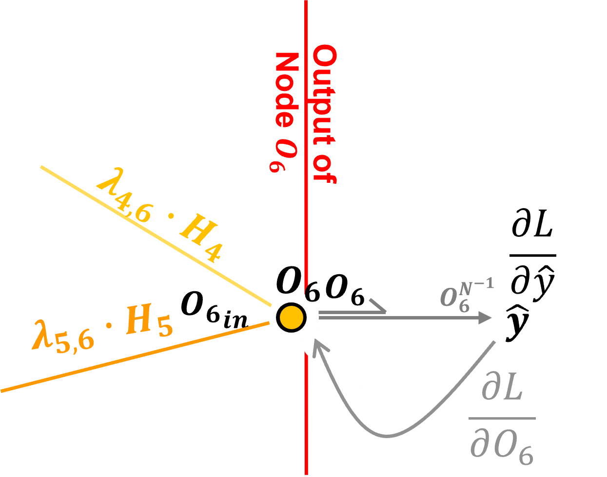
For the example of our simple artificial neural network with the output at node, \(O_6\), our loss derivative is,
So this is our loss derivative backpropagated to the output our output node, and we are now we are ready to backpropagate this loss derivative through our artificial neural network, let’s talk about how we step through nodes and along connections.
Backpropagation through Output Node with Identity Activation#
Let’s backpropagate through our output node, \(O_6\), from post-activation to pre-activation. To do this we need the partial derivative our activation function.
since this is an output node with a regression artificial neural network I have selected the identity or linear activation function.
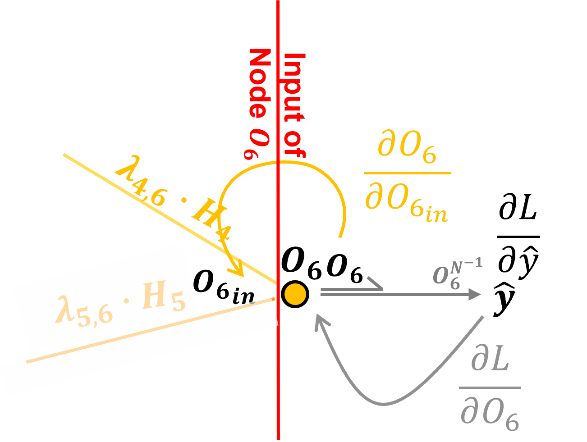
The identity activation at output node \(O_6\) is defined as:
The derivative of the identity activation at node \(O_6\) with respect to its input \(O_{6_{in}}\), i.e., crossing node \(O_6\) is,
Note, we just need \(O_6\) the output signal from the node. Now we can add this to our chain rule to backpropagate from loss derivative with respect to the node output, \(\frac{\partial \mathcal{L}}{\partial O_6}\), and to the loss derivative with respect to the node input, \(\frac{\partial \mathcal{L}}{\partial O_{6_{\text{in}}}}\),
Now that we have backpropagated through an output node, let’s backpropagation along the \(H_4\) to \(O_6\) connection from the hidden layer.
Backpropagation along Connections#
Now let’s backpropagate along the connection between nodes \(O_6\) and \(H_4\).
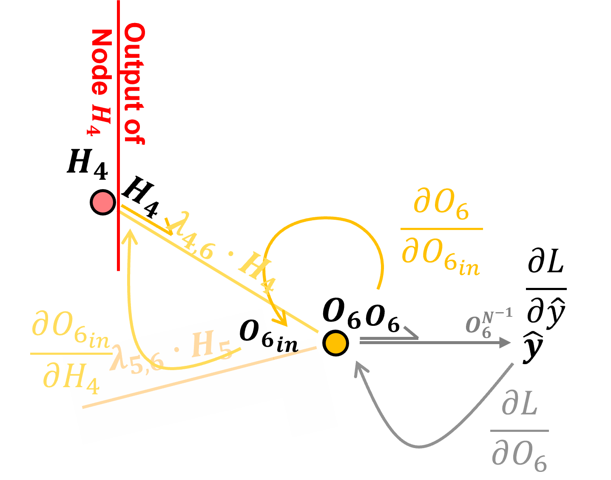
Preactivation, the input to node \(𝑂_6\) is calculated as,
We calculate the derivative along the connection as,
by resolving the above partial derivative, we see that backpropagation along a connection by applying the connection weight.
Note, we just need the current connection weight \(\lambda_{4,6}\). Now we can add this to our chain rule to backpropagate along the \(H_4\) to \(O_6\) connection from loss derivative with respect to the output layer node input \(\frac{\partial \mathcal{L}}{\partial O_{6_{\text{in}}}}\), to the loss derivative with respect to the hidden layer node output \(\frac{\partial \mathcal{L}}{\partial H_4}\).
Backpropagation through Nodes with Sigmoid Activation#
Let’s backpropagate through a hidden layer node, \(H_4\), from postactivation to preactivation. To do this we need the partial derivative our activation function.
we are assuming sigmoid activation for all hidden layer nodes
for super clean logic, everyone resolves the activation derivative as a function of the output rather than as typical the input,
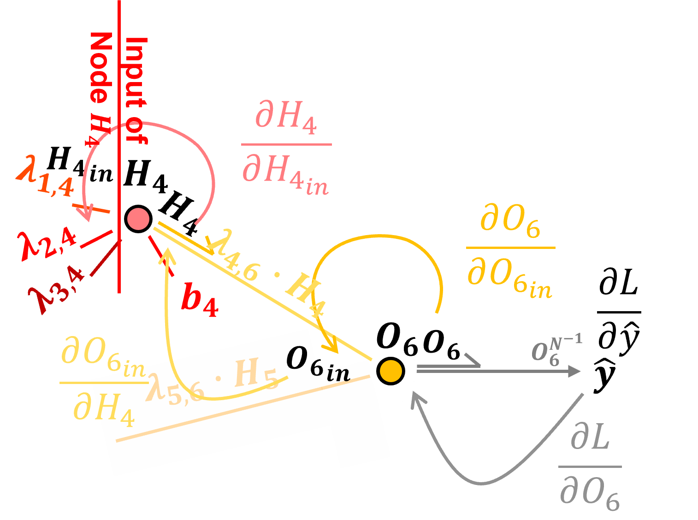
The sigmoid activation at output node \(H_4\) is defined as:
The derivative of the sigmoid activation at node \(H_4\) with respect to its input \(H_{4_{in}}\), i.e., crossing node \(H_4\) is,
Now, for compact notation let’s set,
and substituting we have,
and by the chain rule we can extend it to,
The derivative of \(u = e^{-H_{4_{in}}}\) with respect to \(H_{4_{in}}\) is:
now we can substitute,
Express in terms of node \(H_4\) output, \(H_4 = \frac{1}{1 + u}\),
So we can backpropagate through our node, \(H_4\), from node post-activation output, \(H_4\) to node pre-activation input, \(H_{4_{in}}\), by,
Note, we just need \(H_4\) the output signal from the node. Now we can add this to our chain rule to backpropagate from loss derivative to the output of node \(H_4\) and to the input of node \(H_4\),
Now we can handle all cases of backpropagation through the nodes in our network.
Backpropagation Along Another Connection#
For continuity and completeness, let’s repeat the previously described method to backpropagate along the connection \(I_1\) to \(H_4\).
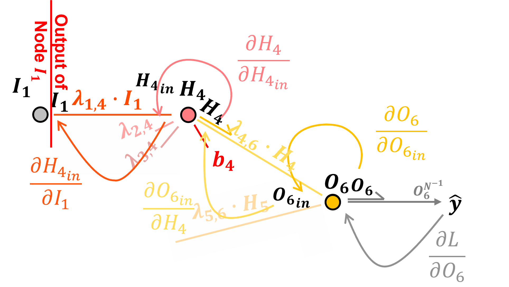
Once again, preactivation the input to node \(H_4\) is calculated as,
We calculate the derivative along the connection as,
by resolving the above partial derivative, we see that backpropagation along a connection by applying the connection weight.
Note, we just need the current connection weight \(\lambda_{4,6}\). Now we can add this to our chain rule to backpropagate along the \(H_4\) to \(O_6\) connection from loss derivative with respect to the output layer node input \(\frac{\partial \mathcal{L}}{\partial O_{6_{\text{in}}}}\), to the loss derivative with respect to the hidden layer node output \(\frac{\partial \mathcal{L}}{\partial H_4}\).
Accounting for Multiple Paths#
Our loss derivative with respect to the node output \(I_1\), \(\frac{\partial \mathcal{L}}{\partial I_1}\) is not correct!
we accounted for the \(O_6\) to \(H_4\) to \(I_1\) path, but we did not acccount for the \(O_6\) to \(H_5\) to \(I_1\) path
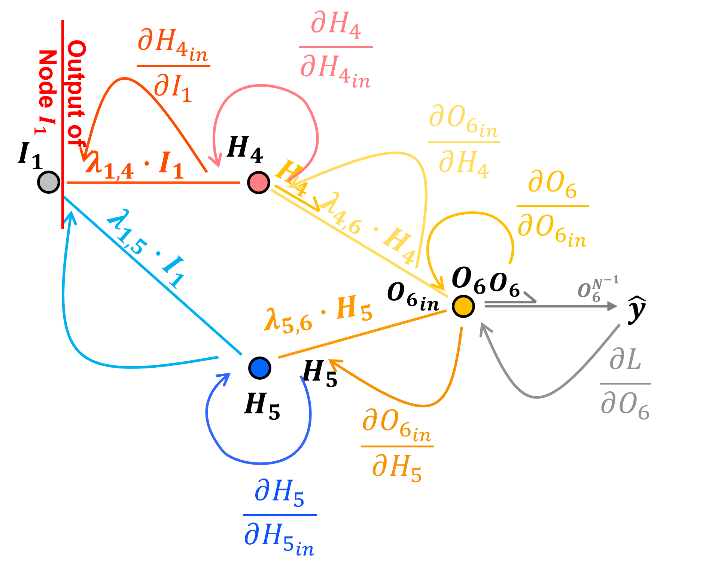
To account for multiple paths we just need to sum over all the paths.
we can evaluate this as,
and then simplify by removing the 1.0 values and grouping terms as,
and now we can evaluate this simplified form as,
Backpropagation through Input Nodes with Identity Activation#
Let’s backpropagate through our input node, \(I_1\), from postactivation to preactivation. To do this we need the partial derivative our activation function.
since this is an input node I have selected the identity or linear activation function.
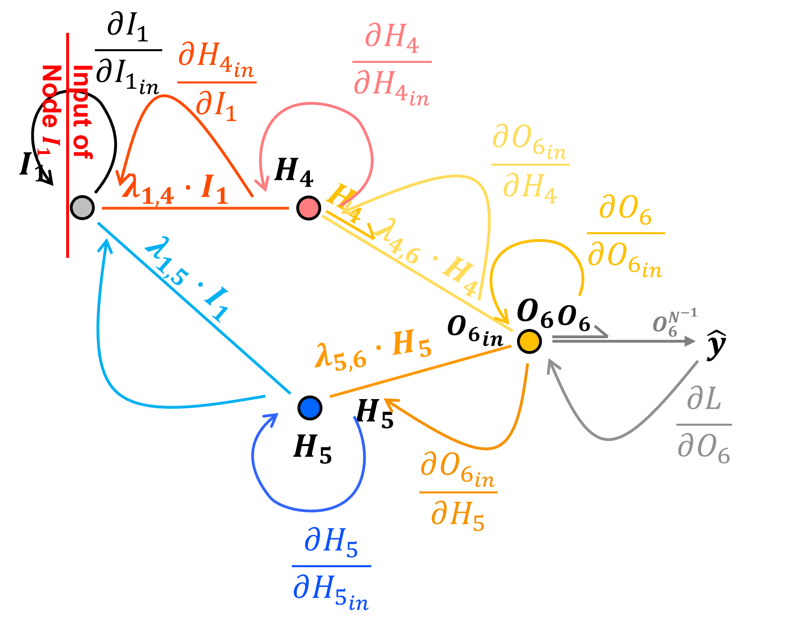
The identity activation at output node \(I_1\) is defined as:
The derivative of the identity activation at node \(I_1\) with respect to its input \(I_{1_{in}}\), i.e., passing through node \(I_1\) is,
Note, we just need \(I_1\) the output signal from the node. Now we can add this to our chain rule to backpropagate from loss derivative with respect to the node output, \(\frac{\partial \mathcal{L}}{\partial I_1}\), and to the loss derivative with respect to the node input, \(\frac{\partial \mathcal{L}}{\partial I_{1_{\text{in}}}}\),
we can evaluate this as,
For fun I designed this notation for maximum clarity,
But this can be simplified by removing the 1.0 values and grouping terms as,
and now we can evaluate this simplified form as,
For completeness here is the backpropagation for the other input nodes, here’s \(\frac{\partial \mathcal{L}}{\partial I_{2_{in}}}\),
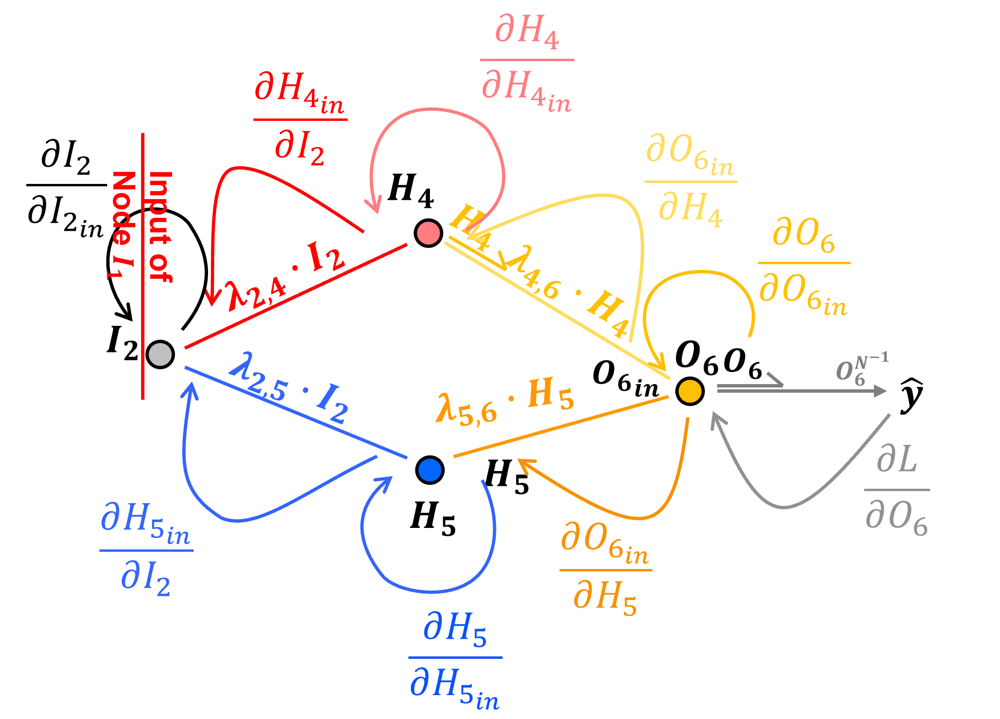
For brevity I have remove the 1.0s and grouped like terms,
and now we can evaluate this simplified form as,
and here is \(\frac{\partial \mathcal{L}}{\partial I_{3_{in}}}\),
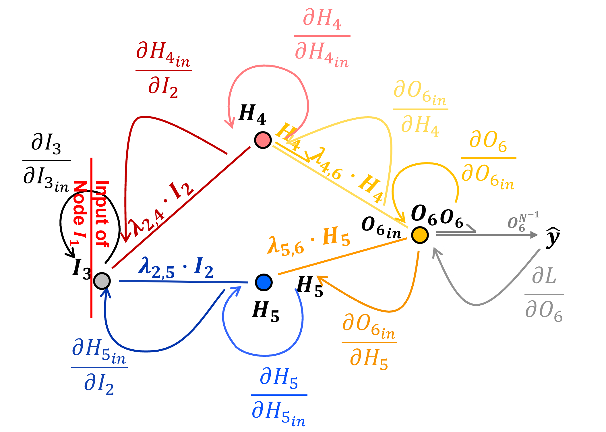
For brevity I have remove the 1.0s and grouped like terms,
and now we can evaluate this simplified form as,
Loss Derivatives with Respect to Weights and Biases#
Now we have back propagated the loss derivative through our network.
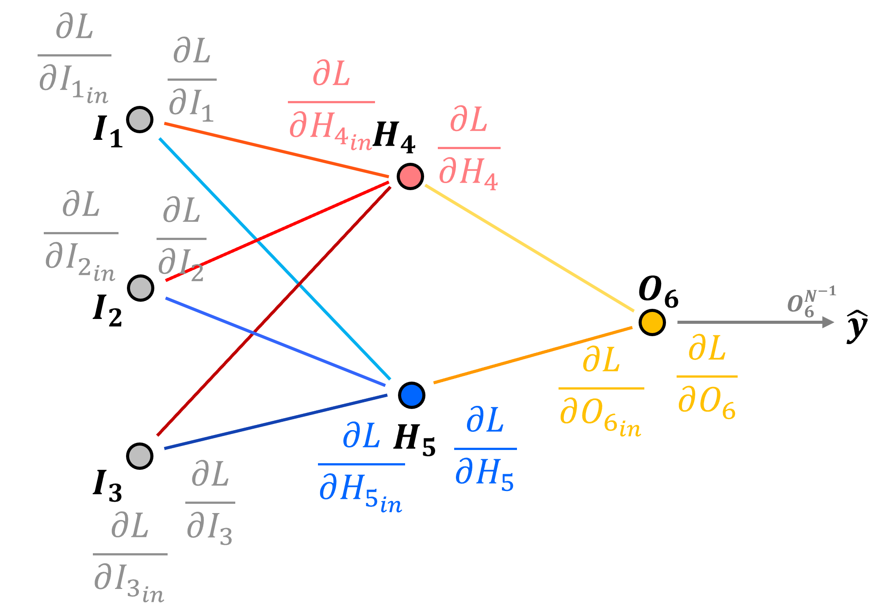
and we have the loss derivative with respect to the input and output of each node in our network,
But what we actually need is the loss derivative with respect to each connection weights,
and node biases,
How do we backpropagate the loss derivative to a connection weight? Let’s start with the \(H_4\) to \(O_6\) connection.
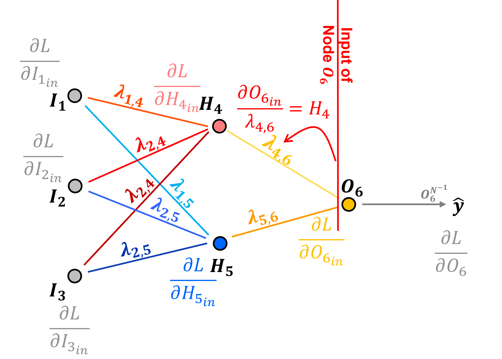
Preactivation, input to node \(O_6\) we have,
We calculate the derivative with respect to the connection weight as,
We need the output of the node in the previous layer passed along the connection to backpropagate to the loss derivative with respect to the connection weight from the input to the next node,
Now, for completeness, here are the equations for all of our network’s connection weights.
See the pattern, the loss derivatives with respect to connection weights are,
Now how do we backpropagate the loss derivative to a node bias? Let’s start with the \(O_6\) node.
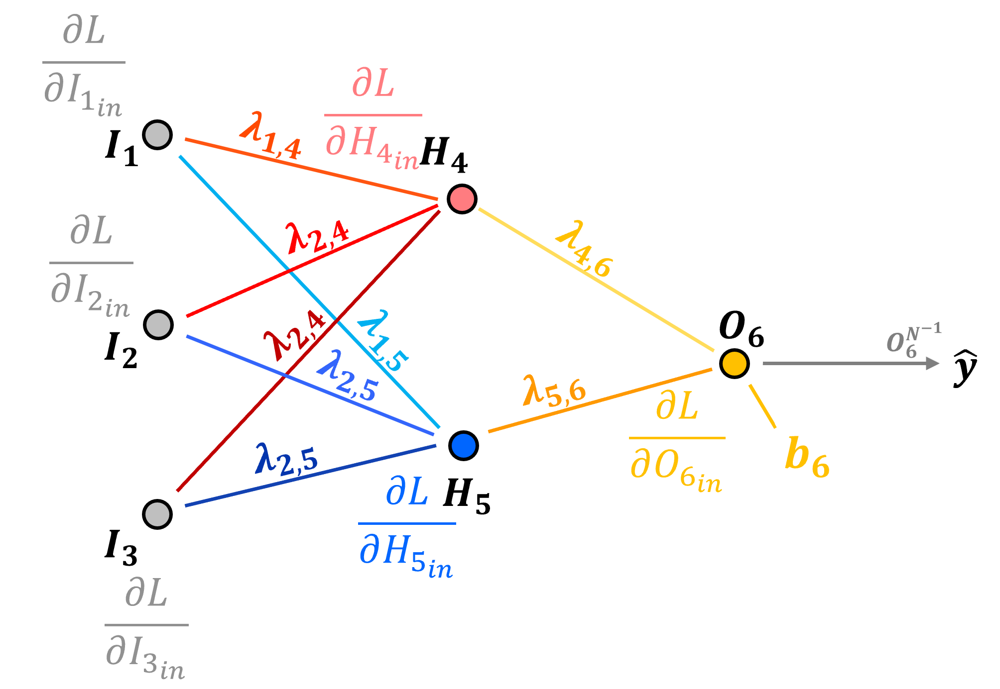
Once again, the preactivation, input to node \(O_6\) is,
We calculate the derivative of a connection weight as,
so our bias loss derivative is equal to the node input loss derivative,
For completeness here are all the loss derivatives with respect to node biases,
See the pattern, the loss derivatives with respect to node biases are,
Backpropagation Example#
Let’s take the backpropagation method explained above and apply them to my interactive neural network.
Here’s the result for our first training epoch with only 1 sample,
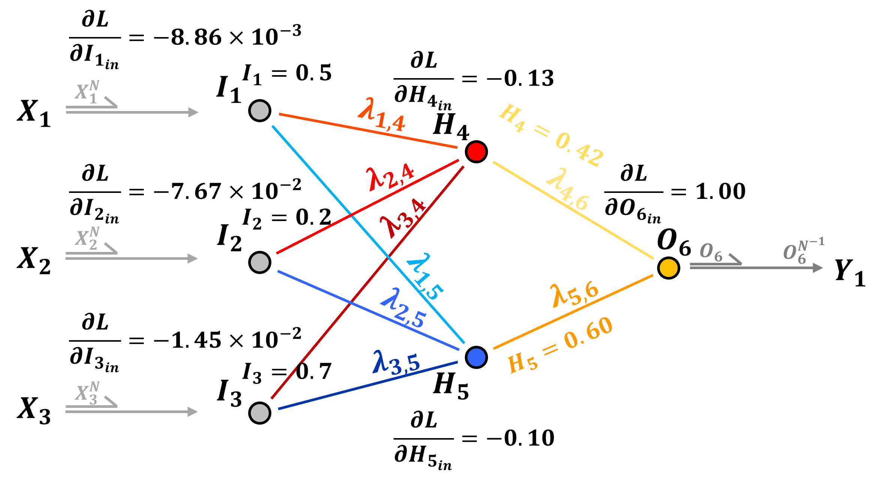
My interactive dashboard provides all the loss derivatives with respect to the input for each node and the output signals from each node, so for example we can calculate \(\frac{\partial L}{\partial \lambda_{4,6}}\) as,
Here’s the loss derivatives with respect to connection weights for the other hidden layer to output node connection,
and now let’s get all the input to hidden layer connections,
This takes care of all of the connection weight error derivatives, now lets take care of the node bias error derivatives.
the node bias error derivatives are the same as the node peractivation error derivatives. Now let’s calculate the bias terms in the hidden layer,
Updating Model Parameters#
The loss derivatives with respect to each of the model parameters are the gradients, so we are ready to use gradient descent optimization with the addition of,
learning rate - to scale the rate of change of the model updates we assign a learning rate, \(\eta\). For our model parameter examples from above,
recall, this process of gradient calculation and model parameters, weights and biases, updating is iterated and is known as gradient descent optimization.
the goal is to explore the loss hypersurface, avoiding and escaping local minimums and ultimately finding the global minimum.
learning rate, also known as step size is commonly set between 0.0 and 1.0, note 0.01 is the default in Keras module of TensorFlow
Low Learning Rate – more stable, but a slower solution, may get stuck in a local minimum
High Learning Rate – may be unstable, but perhaps a faster solution, may diverge out of the global minimum
One strategy is to start with a high learning rate and then to decrease the learning rate over the iterations
Learning Rate Decay - set as > 0 to avoid mitigate oscillations,
where \(\ell\) is the model training epoch
Notice that the model parameter updates are for a single training data case? Consider this single model parameter,
we calculate the update over all samples in the batch and apply the average of the updates.
is applied to update the \(\lambda_{4,6}\) parameter as,
is dependent on \(H_4\) node output, and \(L\) error that are for a single sample, \(𝑥_1,\ldots,𝑥_𝑚\) and \(𝑦\); therefore, we cannot calculate a single parameter update over all our \(1,\ldots,n\) training data samples.
instead we can calculate \(1,\ldots,n\) updates and then apply the average of all the updates to our model parameters,
since the learning rate is a constant, we can move it out of the sum and now we are averaging the gradients,
Training Epochs#
This is a good time to talk about stochastic gradient descent optimization, first let’s define some common terms,
Batch Gradient Descent - updates the model parameters after passing through all of the data
Stochastic Gradient Descent - updates the model parameters over each sample data
Mini-batch Gradient Descent - updates the model parameter after passing through a single batch
With mini-batch gradient descent stochasticity is introduced through the use of subsets of the data, known as batches,
for example, if we divide our 100 samples into 4 batches, then we iterate over each batch separately
we speed up the individual updates, fewer data are faster to calculate, but we introduce more error
this often helps the training explore for the global minimum and avoid getting stuck in local minimums and along ridges in the loss hypersurface
Finally our last definition here,
epoch - is one pass over all of the data, so that would be 4 iterations of updating the model parameters if we have 4 mini-batches
There are many other considerations that I will add later including,
momentum
adaptive optimization
Now let’s build the above artificial neural network by-hand and visualize the solution!
this is by-hand so that you can see every calculation. I intentionally avoided using TensorFlow or PyTorch.
Interactive Dashboard#
I built out an interactive Python dashboard with the code below for training an artificial neural network. You can step through the training iteration and observe over the training epochs,
model parameters
forward pass predictions
backpropagation of error derivatives
If you would like to see artificial neural networks in action, check out my ANN interactive Python dashboard,
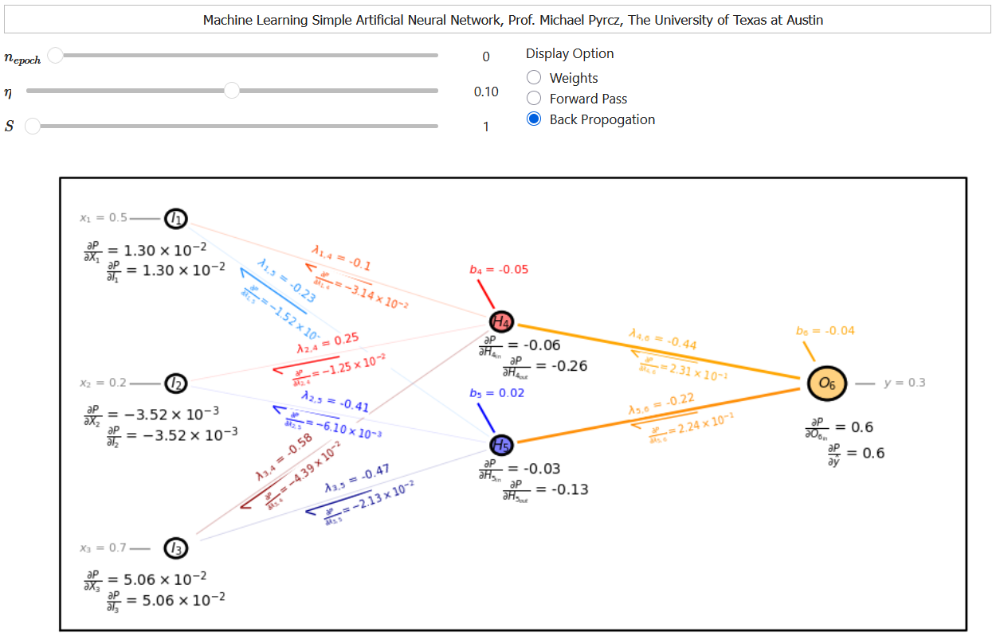
Import Required Packages#
We will also need some standard packages. These should have been installed with Anaconda 3.
import numpy as np
import pandas as pd
import matplotlib.pyplot as plt
from matplotlib.ticker import (MultipleLocator, AutoMinorLocator, AutoLocator) # control of axes ticks
plt.rc('axes', axisbelow=True) # set axes and grids in the background for all plots
import math
seed = 13
If you get a package import error, you may have to first install some of these packages. This can usually be accomplished by opening up a command window on Windows and then typing ‘python -m pip install [package-name]’. More assistance is available with the respective package docs.
Declare Functions#
Here’s the functions to make, train and visualize our artificial neural network.
def add_grid():
plt.gca().grid(True, which='major',linewidth = 1.0); plt.gca().grid(True, which='minor',linewidth = 0.2) # add y grids
plt.gca().tick_params(which='major',length=7); plt.gca().tick_params(which='minor', length=4)
plt.gca().xaxis.set_minor_locator(AutoMinorLocator()); plt.gca().yaxis.set_minor_locator(AutoMinorLocator()) # turn on minor ticks
def calculate_angle_rads(x1, y1, x2, y2):
dx = x2 - x1 # Calculate the differences
dy = y2 - y1
angle_rads = math.atan2(dy, dx) # Calculate the angle in radians
#angle_degrees = math.degrees(angle_radians) # Convert the angle to degrees
return angle_rads
def offset(pto, distance, angle_deg): # modified from ChatGPT 4.o generated
angle_rads = math.radians(angle_deg) # Convert angle from degrees to radians
x_new = pto[0] + distance * math.cos(angle_rads) # Calculate the new coordinates
y_new = pto[1] + distance * math.sin(angle_rads)
return np.array((x_new, y_new))
def offsetx(xo, distance, angle_deg): # modified from ChatGPT 4.o generated
angle_rads = math.radians(angle_deg) # Convert angle from degrees to radians
x_new = xo + distance * math.cos(angle_rads) # Calculate the new coordinates
return np.array((xo, x_new))
def offset_arrx(xo, distance, angle_deg,size): # modified from ChatGPT 4.o generated
angle_rads = math.radians(angle_deg) # Convert angle from degrees to radians
x_new = xo + distance * math.cos(angle_rads) # Calculate the new coordinates
x_arr = x_new + size * math.cos(angle_rads+2.48) # Calculate the new coordinates
return np.array((x_new, x_arr))
def offsety(yo, distance, angle_deg): # modified from ChatGPT 4.o generated
angle_rads = math.radians(angle_deg) # Convert angle from degrees to radians
y_new = yo + distance * math.sin(angle_rads) # Calculate the new coordinates
return np.array((yo, y_new))
def offset_arry(yo, distance, angle_deg,size): # modified from ChatGPT 4.o generated
angle_rads = math.radians(angle_deg) # Convert angle from degrees to radians
y_new = yo + distance * math.sin(angle_rads) # Calculate the new coordinates
y_arr = y_new + size * math.sin(angle_rads+2.48) # Calculate the new coordinates
return np.array((y_new, y_arr))
def lint(x1, y1, x2, y2, t):
# Calculate the interpolated coordinates
x = x1 + t * (x2 - x1)
y = y1 + t * (y2 - y1)
return np.array((x, y))
def lintx(x1, y1, x2, y2, t):
# Calculate the interpolated coordinates
x = x1 + t * (x2 - x1)
return x
def linty(x1, y1, x2, y2, t):
# Calculate the interpolated coordinates
y = y1 + t * (y2 - y1)
return y
def lint_intx(x1, y1, x2, y2, ts, te):
# Calculate the interpolated coordinates
xs = x1 + ts * (x2 - x1)
xe = x1 + te * (x2 - x1)
return np.array((xs,xe))
def lint_inty(x1, y1, x2, y2, ts, te):
# Calculate the interpolated coordinates
ys = y1 + ts * (y2 - y1)
ye = y1 + te * (y2 - y1)
return np.array((ys,ye))
def lint_int_arrx(x1, y1, x2, y2, ts, te, size):
# Calculate the interpolated coordinates
xe = x1 + te * (x2 - x1)
line_angle_rads = calculate_angle_rads(x1, y1, x2, y2)
x_arr = xe + size * math.cos(line_angle_rads+2.48) # Calculate the new coordinates
return np.array((xe,x_arr))
def lint_int_arry(x1, y1, x2, y2, ts, te, size):
# Calculate the interpolated coordinates
ye = y1 + te * (y2 - y1)
line_angle_rads = calculate_angle_rads(x1, y1, x2, y2)
y_arr = ye + size * math.sin(line_angle_rads+2.48) # Calculate the new coordinates
return np.array((ye,y_arr))
def as_si(x, ndp): # from xnx on StackOverflow https://stackoverflow.com/questions/31453422/displaying-numbers-with-x-instead-of-e-scientific-notation-in-matplotlib
s = '{x:0.{ndp:d}e}'.format(x=x, ndp=ndp)
m, e = s.split('e')
return r'{m:s}\times 10^{{{e:d}}}'.format(m=m, e=int(e))
The Simple ANN#
I wrote this code to specify a simple ANN:
three input nodes, 2 hidden nodes and 1 output node
and to train the ANN by iteratively performing the forward calculation and backpropagation. I calculate:
the error and then propagate it to each node
solve for the partial derivatives of the error with respect to each weight and bias
all weights, biases and partial derivatives for all epoch are recorded in vectors for plotting
x1 = 0.5; x2 = 0.2; x3 = 0.7; y = 0.3 # training data
lr = 0.2 # learning rate
np.random.seed(seed=seed)
nepoch = 1000
y4 = np.zeros(nepoch); y5 = np.zeros(nepoch); y6 = np.zeros(nepoch)
w14 = np.zeros(nepoch); w24 = np.zeros(nepoch); w34 = np.zeros(nepoch)
w15 = np.zeros(nepoch); w25 = np.zeros(nepoch); w35 = np.zeros(nepoch)
w46 = np.zeros(nepoch); w56 = np.zeros(nepoch)
dw14 = np.zeros(nepoch); dw24 = np.zeros(nepoch); dw34 = np.zeros(nepoch)
dw15 = np.zeros(nepoch); dw25 = np.zeros(nepoch); dw35 = np.zeros(nepoch)
dw46 = np.zeros(nepoch); dw56 = np.zeros(nepoch)
db4 = np.zeros(nepoch); db5 = np.zeros(nepoch); db6 = np.zeros(nepoch)
b4 = np.zeros(nepoch); b5 = np.zeros(nepoch); b6 = np.zeros(nepoch)
y4 = np.zeros(nepoch); y5 = np.zeros(nepoch); y6 = np.zeros(nepoch)
d4 = np.zeros(nepoch); d5 = np.zeros(nepoch); d6 = np.zeros(nepoch)
# initialize the weights - Xavier Weight Initialization
lower, upper = -(1.0 / np.sqrt(3.0)), (1.0 / np.sqrt(3.0)) # lower and upper bound for the weights, uses inputs to node
#lower, upper = -(sqrt(6.0) / sqrt(3.0 + 2.0)), (sqrt(6.0) / sqrt(3.0 + 2.0)) # Normalized Xavier weights, integrates ouputs also
w14[0] = lower + np.random.random() * (upper - lower);
w24[0] = lower + np.random.random() * (upper - lower);
w34[0] = lower + np.random.random() * (upper - lower);
w15[0] = lower + np.random.random() * (upper - lower);
w25[0] = lower + np.random.random() * (upper - lower);
w35[0] = lower + np.random.random() * (upper - lower);
lower, upper = -(1.0 / np.sqrt(2.0)), (1.0 / np.sqrt(2.0))
#lower, upper = -(sqrt(6.0) / sqrt(2.0 + 1.0)), (sqrt(6.0) / sqrt(2.0 + 1.0)) # Normalized Xavier weights, integrates ouputs also
w46[0] = lower + np.random.random() * (upper - lower);
w56[0] = lower + np.random.random() * (upper - lower);
#b4[0] = np.random.random(); b5[0] = np.random.random(); b6[0] = np.random.random()
b4[0] = (np.random.random()-0.5)*0.5; b5[0] = (np.random.random()-0.5)*0.5; b6[0] = (np.random.random()-0.5)*0.5; # small random value
for i in range(0,nepoch):
# forward pass of model
y4[i] = w14[i]*x1 + w24[i]*x2 + w34[i]*x3 + b4[i];
y4[i] = 1.0/(1 + math.exp(-1*y4[i]))
y5[i] = w15[i]*x1 + w25[i]*x2 + w35[i]*x3 + b5[i]
y5[i] = 1.0/(1 + math.exp(-1*y5[i]))
y6[i] = w46[i]*y4[i] + w56[i]*y5[i] + b6[i]
# y6[i] = 1.0/(1 + math.exp(-1*y6[i])) # sgimoid / logistic activation at o6
# back propagate the error through the nodes
# d6[i] = y6[i]*(1-y6[i])*(y-y6[i]) # sgimoid / logistic activation at o6
d6[i] = (y-y6[i]) # identity activation o at o6
d5[i] = y5[i]*(1-y5[i])*w56[i]*d6[i]; d4[i] = y4[i]*(1-y4[i])*w46[i]*d6[i]
# calculate the change in weights
if i < nepoch - 1:
dw14[i] = lr*d4[i]*x1; dw24[i] = lr*d4[i]*x2; dw34[i] = lr*d4[i]*x3
dw15[i] = lr*d5[i]*x1; dw25[i] = lr*d5[i]*x2; dw35[i] = lr*d5[i]*x3
dw46[i] = lr*d6[i]*y4[i]; dw56[i] = lr*d6[i]*y5[i]
db4[i] = lr*d4[i]; db5[i] = lr*d5[i]; db6[i] = lr*d6[i];
w14[i+1] = w14[i] + dw14[i]; w24[i+1] = w24[i] + dw24[i]; w34[i+1] = w34[i] + dw34[i]
w15[i+1] = w15[i] + dw15[i]; w25[i+1] = w25[i] + dw25[i]; w35[i+1] = w35[i] + dw35[i]
w46[i+1] = w46[i] + dw46[i]; w56[i+1] = w56[i] + dw56[i]
b4[i+1] = b4[i] + db4[i]; b5[i+1] = b5[i] + db5[i]; b6[i+1] = b6[i] + db6[i]
Now Visualize the Network for a Specific Epoch#
I wrote a custom network visualization below, select iepoch and visualize the artificial neural network for a specific epoch.
iepoch = 1
dx = -0.19; dy = -0.09; edge = 1.0
o6x = 17; o6y =5; h5x = 10; h5y = 3.5; h4x = 10; h4y = 6.5
i1x = 3; i1y = 9.0; i2x = 3; i2y = 5; i3x = 3; i3y = 1.0; buffer = 0.5
plt.subplot(111)
plt.gca().set_axis_off()
circle_i1 = plt.Circle((i1x,i1y), 0.25, fill=False, edgecolor = 'black',lw=2,zorder=100); plt.annotate(r' $I_1$',(i1x+dx,i1y+dy),zorder=100);
circle_i1b = plt.Circle((i1x,i1y), 0.40, fill=True, facecolor = 'white',edgecolor = None,lw=1,zorder=10);
plt.gca().add_patch(circle_i1); plt.gca().add_patch(circle_i1b)
circle_i2 = plt.Circle((i2x,i2y), 0.25, fill=False, edgecolor = 'black',lw=2,zorder=100); plt.annotate(r' $I_2$',(i2x+dx,i2y+dy),zorder=100);
circle_i2b = plt.Circle((i2x,i2y), 0.40, fill=True, facecolor = 'white',edgecolor = None,lw=1,zorder=10);
plt.gca().add_patch(circle_i2); plt.gca().add_patch(circle_i2b)
circle_i3 = plt.Circle((i3x,i3y), 0.25, fill=False, edgecolor = 'black',lw=2,zorder=100); plt.annotate(r' $I_3$',(i3x+dx,i3y+dy),zorder=100);
circle_i3b = plt.Circle((i3x,i3y), 0.40, fill=True, facecolor = 'white',edgecolor = None,lw=1,zorder=10);
plt.gca().add_patch(circle_i3); plt.gca().add_patch(circle_i3b)
circle_h4 = plt.Circle((h4x,h4y), 0.25, fill=False, edgecolor = 'black',lw=2,zorder=100); plt.annotate(r'$H_4$',(h4x+dx,h4y+dy),zorder=100);
circle_h4b = plt.Circle((h4x,h4y), 0.40, fill=True, facecolor = 'white',edgecolor = None,lw=1,zorder=10);
plt.gca().add_patch(circle_h4); plt.gca().add_patch(circle_h4b)
circle_h5 = plt.Circle((h5x,h5y), 0.25, fill=False, edgecolor = 'black',lw=2,zorder=100); plt.annotate(r'$H_5$',(h5x+dx,h5y+dy),zorder=100);
circle_h5b = plt.Circle((h5x,h5y), 0.40, fill=True, facecolor = 'white',edgecolor = None,lw=1,zorder=10);
plt.gca().add_patch(circle_h5); plt.gca().add_patch(circle_h5b)
circle_o6 = plt.Circle((o6x,o6y), 0.25, fill=False, edgecolor = 'black',lw=2,zorder=100); plt.annotate(r'$O_6$',(o6x+dx,o6y+dy),zorder=100);
circle_o6b = plt.Circle((o6x,o6y), 0.40, fill=True, facecolor = 'white',edgecolor = None,lw=1,zorder=10);
plt.gca().add_patch(circle_o6); plt.gca().add_patch(circle_o6b)
plt.plot([i1x-edge,i1x],[i1y,i1y],color='grey',lw=1.0,zorder=1)
plt.plot([i2x-edge,i2x],[i2y,i2y],color='grey',lw=1.0,zorder=1)
plt.plot([i3x-edge,i3x],[i3y,i3y],color='grey',lw=1.0,zorder=1)
plt.annotate(r'$x_1$ = ' + str(np.round(x1,2)),(i1x-buffer-1.6,i1y-0.05),size=8,zorder=200,color='grey',
bbox=dict(boxstyle="round,pad=0.0", edgecolor='white', facecolor='white', alpha=1.0),rotation=0)
plt.annotate(r'$x_2$ = ' + str(np.round(x2,2)),(i2x-buffer-1.6,i2y-0.05),size=8,zorder=200,color='grey',
bbox=dict(boxstyle="round,pad=0.0", edgecolor='white', facecolor='white', alpha=1.0),rotation=0)
plt.annotate(r'$x_3$ = ' + str(np.round(x3,2)),(i3x-buffer-1.6,i3y-0.05),size=8,zorder=200,color='grey',
bbox=dict(boxstyle="round,pad=0.0", edgecolor='white', facecolor='white', alpha=1.0),rotation=0)
plt.plot([i1x,h4x],[i1y,h4y],color='lightcoral',lw=1.0,zorder=1)
plt.plot([i2x,h4x],[i2y,h4y],color='red',lw=1.0,zorder=1)
plt.plot([i3x,h4x],[i3y,h4y],color='darkred',lw=1.0,zorder=1)
plt.plot([i1x,h5x],[i1y,h5y],color='dodgerblue',lw=1.0,zorder=1)
plt.plot([i2x,h5x],[i2y,h5y],color='blue',lw=1.0,zorder=1)
plt.plot([i3x,h5x],[i3y,h5y],color='darkblue',lw=1.0,zorder=1)
plt.plot([h4x,o6x],[h4y,o6y],color='orange',lw=1.0,zorder=1)
plt.plot([h5x,o6x],[h5y,o6y],color='darkorange',lw=1.0,zorder=1)
plt.plot([o6x+edge,o6x],[o6y,o6y],color='grey',lw=1.0,zorder=1)
plt.annotate(r'$\hat{y}$ = ' + str(np.round(y6[iepoch],2)),(o6x+buffer+0.7,o6y-0.05),size=8,zorder=200,color='grey',
bbox=dict(boxstyle="round,pad=0.0", edgecolor='white', facecolor='white', alpha=1.0),rotation=0)
plt.plot(offsetx(h4x,2,-12),offsety(h4y,2,-12)+0.1,color='orange',lw=1.0,zorder=1)
plt.plot(offset_arrx(h4x,2,-12,0.2),offset_arry(h4y,2,-12,0.2)+0.1,color='orange',lw=1.0,zorder=1)
plt.annotate(r'$H_{4}$ = ' + str(np.round(y4[iepoch],2)),(lintx(h4x,h4y,o6x,o6y,0.08),linty(h4x,h4y,o6x,o6y,0.08)-0.0),size=8,zorder=200,color='orange',
bbox=dict(boxstyle="round,pad=0.0", edgecolor='white', facecolor='white', alpha=1.0),rotation=-12)
plt.plot(offsetx(h5x,2,12),offsety(h5y,2,12)+0.1,color='darkorange',lw=1.0,zorder=1)
plt.plot(offset_arrx(h5x,2,12,0.2),offset_arry(h5y,2,12,0.2)+0.1,color='darkorange',lw=1.0,zorder=1)
plt.annotate(r'$H_{5}$ = ' + str(np.round(y5[iepoch],2)),(lintx(h5x,h5y,o6x,o6y,0.07),linty(h5x,h5y,o6x,o6y,0.07)+0.25),size=8,zorder=200,color='darkorange',
bbox=dict(boxstyle="round,pad=0.0", edgecolor='white', facecolor='white', alpha=1.0),rotation=12)
plt.annotate(r'$\frac{\partial P}{\partial O_{6_{in}}}$ = ' + str(np.round(d6[iepoch],2)),(o6x-0.5,o6y-0.7),size=10)
plt.annotate(r'$\frac{\partial P}{\partial H_{4_{in}}}$ = ' + str(np.round(d4[iepoch],2)),(h4x-0.5,h4y-0.7),size=10)
plt.annotate(r'$\frac{\partial P}{\partial H_{5_{in}}}$ = ' + str(np.round(d5[iepoch],2)),(h5x-0.5,h5y-0.7),size=10)
plt.annotate(r'$\frac{\partial P}{\partial \hat{y}}$ = ' + str(np.round(d6[iepoch],2)),(o6x,o6y-1.2),size=10)
plt.annotate(r'$\frac{\partial P}{\partial H_{4_{out}}}$ = ' + str(np.round(w46[iepoch]*d6[iepoch],2)),(h4x,h4y-1.2),size=10)
plt.annotate(r'$\frac{\partial P}{\partial H_{5_{out}}}$ = ' + str(np.round(w56[iepoch]*d6[iepoch],2)),(h5x,h5y-1.2),size=10)
plt.plot(lint_intx(h4x, h4y, o6x, o6y,0.4,0.6),lint_inty(h4x,h4y,o6x,o6y,0.4,0.6)-0.1,color='orange',lw=1.0,zorder=1)
plt.plot(lint_int_arrx(o6x,o6y,h4x,h4y,0.4,0.6,0.2),lint_int_arry(o6x,o6y,h4x,h4y,0.4,0.6,0.2)-0.1,color='orange',lw=1.0,zorder=1)
plt.annotate(r'$\frac{\partial P}{\partial \lambda_{4,6}}$ = ' + str(np.round(dw46[iepoch]/lr,4)),(lintx(h4x,h4y,o6x,o6y,0.5)-0.6,linty(h4x,h4y,o6x,o6y,0.5)-0.72),size=10,zorder=200,color='orange',
bbox=dict(boxstyle="round,pad=0.0", edgecolor='white', facecolor='white', alpha=1.0),rotation=-11)
plt.plot(lint_intx(h5x, h5y, o6x, o6y,0.4,0.6),lint_inty(h5x,h5y,o6x,o6y,0.4,0.6)-0.1,color='darkorange',lw=1.0,zorder=1)
plt.plot(lint_int_arrx(o6x,o6y,h5x,h5y,0.4,0.6,0.2),lint_int_arry(o6x,o6y,h5x,h5y,0.4,0.6,0.2)-0.1,color='darkorange',lw=1.0,zorder=1)
plt.annotate(r'$\frac{\partial P}{\partial \lambda_{5,6}}$ = ' + str(np.round(dw56[iepoch]/lr,4)),(lintx(h5x,h5y,o6x,o6y,0.5)-0.4,linty(h5x,h5y,o6x,o6y,0.5)-0.6),size=10,zorder=200,color='darkorange',
bbox=dict(boxstyle="round,pad=0.0", edgecolor='white', facecolor='white', alpha=1.0),rotation=12)
plt.plot(offsetx(i1x,2,-20),offsety(i1y,2,-20)+0.1,color='lightcoral',lw=1.0,zorder=1)
plt.plot(offset_arrx(i1x,2,-20,0.2),offset_arry(i1y,2,-20,0.2)+0.1,color='lightcoral',lw=1.0,zorder=1)
plt.annotate(r'$I_{1}$ = ' + str(np.round(x1,2)),(lintx(i1x,i1y,h4x,h4y,0.1),linty(i1x,i1y,h4x,h4y,0.1)),size=8,zorder=200,color='lightcoral',
bbox=dict(boxstyle="round,pad=0.0", edgecolor='white', facecolor='white', alpha=1.0),rotation=-20)
plt.plot(offsetx(i2x,2,12),offsety(i2y,2,12)+0.1,color='red',lw=1.0,zorder=1)
plt.plot(offset_arrx(i2x,2,12,0.2),offset_arry(i2y,2,12,0.2)+0.1,color='red',lw=1.0,zorder=1)
plt.annotate(r'$I_{2}$ = ' + str(np.round(x2,2)),(lintx(i2x,i2y,h4x,h4y,0.1),linty(i2x,i2y,h4x,h4y,0.1)+0.22),size=8,zorder=200,color='red',
bbox=dict(boxstyle="round,pad=0.0", edgecolor='white', facecolor='white', alpha=1.0),rotation=12)
plt.plot(offsetx(i3x,2,38),offsety(i3y,2,38)+0.1,color='darkred',lw=1.0,zorder=1)
plt.plot(offset_arrx(i3x,2,38,0.2),offset_arry(i3y,2,38,0.2)+0.1,color='darkred',lw=1.0,zorder=1)
plt.annotate(r'$I_{3}$ = ' + str(np.round(x3,2)),(lintx(i3x,i3y,h4x,h4y,0.08)-0.2,linty(i3x,i3y,h4x,h4y,0.08)+0.2),size=8,zorder=200,color='darkred',
bbox=dict(boxstyle="round,pad=0.0", edgecolor='white', facecolor='white', alpha=1.0),rotation=38)
plt.annotate(r'$\lambda_{1,4}$ = ' + str(np.round(w14[iepoch],2)),((i1x+h4x)*0.45,(i1y+h4y)*0.5-0.05),size=8,zorder=200,color='lightcoral',
bbox=dict(boxstyle="round,pad=0.0", edgecolor='white', facecolor='white', alpha=1.0),rotation=-18)
plt.annotate(r'$\lambda_{2,4}$ = ' + str(np.round(w24[iepoch],2)),((i2x+h4x)*0.45-0.3,(i2y+h4y)*0.5-0.03),size=8,zorder=200,color='red',
bbox=dict(boxstyle="round,pad=0.0", edgecolor='white', facecolor='white', alpha=1.0),rotation=10)
plt.annotate(r'$\lambda_{3,4}$ = ' + str(np.round(w34[iepoch],2)),((i3x+h4x)*0.45-1.2,(i3y+h4y)*0.5-1.1),size=8,zorder=200,color='darkred',
bbox=dict(boxstyle="round,pad=0.0", edgecolor='white', facecolor='white', alpha=1.0),rotation=38)
plt.annotate(r'$\lambda_{1,5}$ = ' + str(np.round(w15[iepoch],2)),((i1x+h5x)*0.55-2.5,(i1y+h5y)*0.5+0.9),size=8,zorder=200,color='dodgerblue',
bbox=dict(boxstyle="round,pad=0.0", edgecolor='white', facecolor='white', alpha=1.0),rotation=-36)
plt.annotate(r'$\lambda_{2,5}$ = ' + str(np.round(w25[iepoch],2)),((i2x+h5x)*0.55-1.5,(i2y+h5y)*0.5+0.05),size=8,zorder=200,color='blue',
bbox=dict(boxstyle="round,pad=0.0", edgecolor='white', facecolor='white', alpha=1.0),rotation=-12)
plt.annotate(r'$\lambda_{3,5}$ = ' + str(np.round(w35[iepoch],2)),((i3x+h5x)*0.55-1.0,(i3y+h5y)*0.5+0.1),size=8,zorder=200,color='darkblue',
bbox=dict(boxstyle="round,pad=0.0", edgecolor='white', facecolor='white', alpha=1.0),rotation=20)
plt.annotate(r'$\lambda_{4,6}$ = ' + str(np.round(w46[iepoch],2)),((h4x+o6x)*0.47,(h4y+o6y)*0.47+0.39),size=8,zorder=200,color='orange',
bbox=dict(boxstyle="round,pad=0.0", edgecolor='white', facecolor='white', alpha=1.0),rotation=-12)
plt.annotate(r'$\lambda_{5,6}$ = ' + str(np.round(w56[iepoch],2)),((h5x+o6x)*0.47,(h5y+o6y)*0.47+0.26),size=8,zorder=200,color='darkorange',
bbox=dict(boxstyle="round,pad=0.0", edgecolor='white', facecolor='white', alpha=1.0),rotation=12)
plt.plot(lint_intx(i1x, i1y, h4x, h4y,0.4,0.6),lint_inty(i1x,i1y,h4x,h4y,0.4,0.6)-0.1,color='lightcoral',lw=1.0,zorder=1)
plt.plot(lint_int_arrx(h4x,h4y,i1x,i1y,0.4,0.6,0.2),lint_int_arry(h4x,h4y,i1x,i1y,0.4,0.6,0.2)-0.1,color='lightcoral',lw=1.0,zorder=1)
plt.annotate(r'$\frac{\partial P}{\partial \lambda_{1,4}} =$' + r'${0:s}$'.format(as_si(dw14[iepoch]/lr,2)),(lintx(i1x,i1y,h4x,h4y,0.5)-0.6,linty(i1x,i1y,h4x,h4y,0.5)-1.0),size=8,zorder=200,color='lightcoral',
bbox=dict(boxstyle="round,pad=0.0", edgecolor='white', facecolor='white', alpha=1.0),rotation=-20)
plt.plot(lint_intx(i2x, i2y, h4x, h4y,0.3,0.5),lint_inty(i2x,i2y,h4x,h4y,0.3,0.5)-0.1,color='red',lw=1.0,zorder=1)
plt.plot(lint_int_arrx(h4x,h4y,i2x,i2y,0.5,0.7,0.2),lint_int_arry(h4x,h4y,i2x,i2y,0.5,0.7,0.2)-0.12,color='red',lw=1.0,zorder=1)
plt.annotate(r'$\frac{\partial P}{\partial \lambda_{2,4}} =$' + r'${0:s}$'.format(as_si(dw24[iepoch]/lr,2)),(lintx(i2x,i2y,h4x,h4y,0.5)-1.05,linty(i2x,i2y,h4x,h4y,0.5)-0.7),size=8,zorder=200,color='red',
bbox=dict(boxstyle="round,pad=0.0", edgecolor='white', facecolor='white', alpha=1.0),rotation=12)
plt.plot(lint_intx(i3x, i3y, h4x, h4y,0.2,0.4),lint_inty(i3x,i3y,h4x,h4y,0.2,0.4)-0.1,color='darkred',lw=1.0,zorder=1)
plt.plot(lint_int_arrx(h4x,h4y,i3x,i3y,0.5,0.8,0.2),lint_int_arry(h4x,h4y,i3x,i3y,0.5,0.8,0.2)-0.12,color='darkred',lw=1.0,zorder=1)
plt.annotate(r'$\frac{\partial P}{\partial \lambda_{3,4}} =$' + r'${0:s}$'.format(as_si(dw34[iepoch]/lr,2)),(lintx(i3x,i3y,h4x,h4y,0.5)-1.7,linty(i3x,i3y,h4x,h4y,0.5)-1.7),size=8,zorder=200,color='darkred',
bbox=dict(boxstyle="round,pad=0.0", edgecolor='white', facecolor='white', alpha=1.0),rotation=38)
plt.plot(lint_intx(i3x, i3y, h5x, h5y,0.4,0.6),lint_inty(i3x,i3y,h5x,h5y,0.4,0.6)-0.1,color='darkblue',lw=1.0,zorder=1)
plt.plot(lint_int_arrx(h5x,h5y,i3x,i3y,0.4,0.6,0.2),lint_int_arry(h5x,h5y,i3x,i3y,0.4,0.6,0.2)-0.12,color='darkblue',lw=1.0,zorder=1)
plt.annotate(r'$\frac{\partial P}{\partial \lambda_{3,5}} =$' + r'${0:s}$'.format(as_si(dw35[iepoch]/lr,2)),(lintx(i3x,i3y,h5x,h5y,0.5)-0.4,linty(i3x,i3y,h5x,h5y,0.5)-0.6),size=8,zorder=200,color='darkblue',
bbox=dict(boxstyle="round,pad=0.0", edgecolor='white', facecolor='white', alpha=1.0),rotation=20)
plt.plot(lint_intx(i2x, i2y, h5x, h5y,0.3,0.5),lint_inty(i2x,i2y,h5x,h5y,0.3,0.5)-0.1,color='blue',lw=1.0,zorder=1)
plt.plot(lint_int_arrx(h5x,h5y,i2x,i2y,0.3,0.7,0.2),lint_int_arry(h5x,h5y,i2x,i2y,0.3,0.7,0.2)-0.12,color='blue',lw=1.0,zorder=1)
plt.annotate(r'$\frac{\partial P}{\partial \lambda_{2,5}} =$' + r'${0:s}$'.format(as_si(dw25[iepoch]/lr,2)),(lintx(i2x,i2y,h5x,h5y,0.5)-1.2,linty(i2x,i2y,h5x,h5y,0.5)-0.65),size=8,zorder=200,color='blue',
bbox=dict(boxstyle="round,pad=0.0", edgecolor='white', facecolor='white', alpha=1.0),rotation=-12)
plt.plot(lint_intx(i1x, i1y, h5x, h5y,0.2,0.4),lint_inty(i1x,i1y,h5x,h5y,0.2,0.4)-0.1,color='dodgerblue',lw=1.0,zorder=1)
plt.plot(lint_int_arrx(h5x,h5y,i1x,i1y,0.2,0.8,0.2),lint_int_arry(h5x,h5y,i1x,i1y,0.2,0.8,0.2)-0.12,color='dodgerblue',lw=1.0,zorder=1)
plt.annotate(r'$\frac{\partial P}{\partial \lambda_{1,5}} =$' + r'${0:s}$'.format(as_si(dw15[iepoch]/lr,2)),(lintx(i1x,i1y,h5x,h5y,0.5)-2.2,linty(i1x,i1y,h4x,h4y,0.5)-1.5),size=8,zorder=200,color='dodgerblue',
bbox=dict(boxstyle="round,pad=0.0", edgecolor='white', facecolor='white', alpha=1.0),rotation=-36,xycoords = 'data')
plt.subplots_adjust(left=0.0, bottom=0.0, right=1.5, top=1.0, wspace=0.2, hspace=0.2); plt.show()
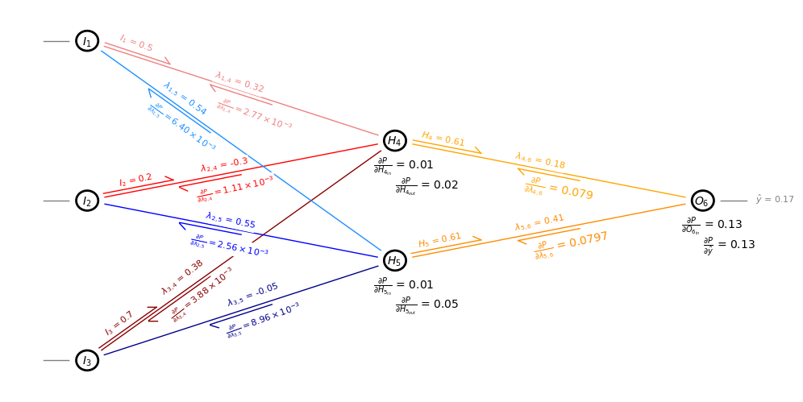
Check the ANN Convergence#
Now we plot the weights, biases and prediction over the epochs to check the training convergence.
plt.subplot(131)
plt.plot(np.arange(1,nepoch+1,1),y6,color='red',label=r'$\hat{y}$'); plt.xlim([1,nepoch]); plt.ylim([0,1])
plt.xlabel('Epochs'); plt.ylabel(r'$\hat{y}$'); plt.title('Simple Artificial Neural Network Prediction')
plt.plot([1,nepoch],[y,y],color='black',ls='--'); plt.vlines(400,-1.5,1.5,color='black')
add_grid(); plt.legend(loc='upper right'); plt.xscale('log')
plt.subplot(132)
plt.plot(np.arange(1,nepoch+1,1),w14,color='lightcoral',label = r'$\lambda_{1,4}$')
plt.plot(np.arange(1,nepoch+1,1),w24,color='red',label = r'$\lambda_{2,4}$')
plt.plot(np.arange(1,nepoch+1,1),w34,color='darkred',label = r'$\lambda_{3,4}$')
plt.plot(np.arange(1,nepoch+1,1),w15,color='dodgerblue',label = r'$\lambda_{1,5}$')
plt.plot(np.arange(1,nepoch+1,1),w25,color='blue',label = r'$\lambda_{2,5}$')
plt.plot(np.arange(1,nepoch+1,1),w35,color='darkblue',label = r'$\lambda_{3,5}$')
plt.plot(np.arange(1,nepoch+1,1),w46,color='orange',label = r'$\lambda_{4,6}$')
plt.plot(np.arange(1,nepoch+1,1),w56,color='darkorange',label = r'$\lambda_{5,6}$')
plt.plot([1,nepoch],[0,0],color='black',ls='--')
plt.xlim([1,nepoch]); plt.ylim([-1.5,1.5]); plt.vlines(400,-1.5,1.5,color='black')
plt.xlabel('Epochs'); plt.ylabel(r'$\hat{y}$'); plt.title('Simple Artificial Neural Network Weights')
add_grid(); plt.legend(loc='upper right'); plt.xscale('log')
plt.subplot(133)
plt.plot(np.arange(1,nepoch+1,1),w14,color='lightgreen',label = r'$\phi_{4}$')
plt.plot(np.arange(1,nepoch+1,1),w24,color='green',label = r'$\phi_{5}$')
plt.plot(np.arange(1,nepoch+1,1),w34,color='darkgreen',label = r'$\phi_{6}$')
plt.plot([1,nepoch],[0,0],color='black',ls='--')
plt.xlim([1,nepoch]); plt.ylim([-1.5,1.5]); plt.vlines(400,-1.5,1.5,color='black')
plt.xlabel('Epochs'); plt.ylabel(r'$\hat{y}$'); plt.title('Simple Artificial Neural Network Biases')
add_grid(); plt.legend(loc='upper right'); plt.xscale('log')
plt.subplots_adjust(left=0.0, bottom=0.0, right=3.0, top=1.0, wspace=0.2, hspace=0.2); plt.show()
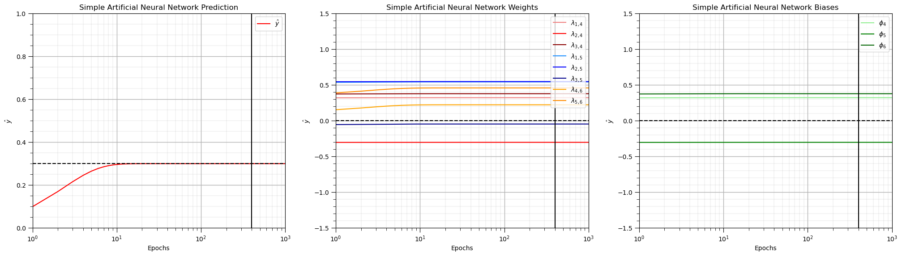
Comments#
This was a basic treatment of artificial neural networks. Much more could be done and discussed, I have many more resources. Check out my shared resource inventory and the YouTube lecture links at the start of this chapter with resource links in the videos’ descriptions.
I hope this is helpful,
Michael
About the Author#

Michael Pyrcz is a professor in the Cockrell School of Engineering, and the Jackson School of Geosciences, at The University of Texas at Austin, where he researches and teaches subsurface, spatial data analytics, geostatistics, and machine learning. Michael is also,
the principal investigator of the Energy Analytics freshmen research initiative and a core faculty in the Machine Learn Laboratory in the College of Natural Sciences, The University of Texas at Austin
an associate editor for Computers and Geosciences, and a board member for Mathematical Geosciences, the International Association for Mathematical Geosciences.
Michael has written over 70 peer-reviewed publications, a Python package for spatial data analytics, co-authored a textbook on spatial data analytics, Geostatistical Reservoir Modeling and author of two recently released e-books, Applied Geostatistics in Python: a Hands-on Guide with GeostatsPy and Applied Machine Learning in Python: a Hands-on Guide with Code.
All of Michael’s university lectures are available on his YouTube Channel with links to 100s of Python interactive dashboards and well-documented workflows in over 40 repositories on his GitHub account, to support any interested students and working professionals with evergreen content. To find out more about Michael’s work and shared educational resources visit his Website.
Want to Work Together?#
I hope this content is helpful to those that want to learn more about subsurface modeling, data analytics and machine learning. Students and working professionals are welcome to participate.
Want to invite me to visit your company for training, mentoring, project review, workflow design and / or consulting? I’d be happy to drop by and work with you!
Interested in partnering, supporting my graduate student research or my Subsurface Data Analytics and Machine Learning consortium (co-PI is Professor John Foster)? My research combines data analytics, stochastic modeling and machine learning theory with practice to develop novel methods and workflows to add value. We are solving challenging subsurface problems!
I can be reached at mpyrcz@austin.utexas.edu.
I’m always happy to discuss,
Michael
Michael Pyrcz, Ph.D., P.Eng. Professor, Cockrell School of Engineering and The Jackson School of Geosciences, The University of Texas at Austin
More Resources Available at: Twitter | GitHub | Website | GoogleScholar | Geostatistics Book | YouTube | Applied Geostats in Python e-book | Applied Machine Learning in Python e-book | LinkedIn
Comments on Network Nomenclature#
Just a couple more comments about my network nomenclature. My goal is to maximize simplicity and clarity,
Network Nodes and Connections - I choose to use unique numbers for all nodes, \(I_1\), \(I_2\), \(I_3\), \(H_4\), \(H_5\) and \(O_6\), instead of repeating numbers over each layer, \(I_1\), \(I_2\), \(I_3\), \(H_1\), \(H_2\), and \(O_1\) to simplify the notation for the weights; therefore, when I say \(\lambda_{1,4}\) you know exactly where this weight is applied in the network, from node \(I_1\) to node \(H_4\).
Node Outputs - I use the node label to also describe the output from the node, for example \(O_6\) is the output node, \(O_6\), and also the signal or value output from node \(O_6\),
Pre- and Post-activation - at our nodes \(H_4\), \(H_5\), and \(O_6\), we have the node input before activation and the node output after activation, I use the notation \(H_{4_{in}}\), \(H_{5_{in}}\), and \(O_{6_{in}}\) for the pre-activation input,
\(\quad\) and \(H_4\), \(H_5\), and \(O_6\) for the post-activation node output.
It is important to have clean, clear notation because with back propagation we have to step through the nodes, going from post-activation to pre-activation.
often variables like \(z\) are applied for pre-activation in neural network literature, but I feel this is ambiguous and may cause confusion as we provide a nuts and bolts approach, explicitly describing every equation, to describe exactly how neural networks are trained and predict